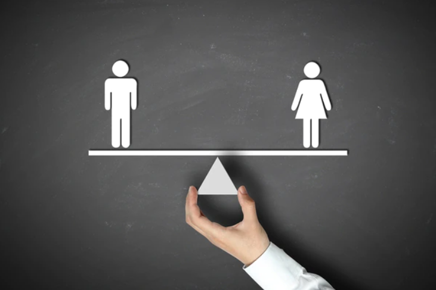
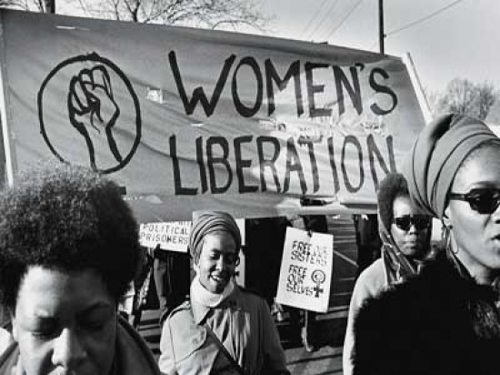
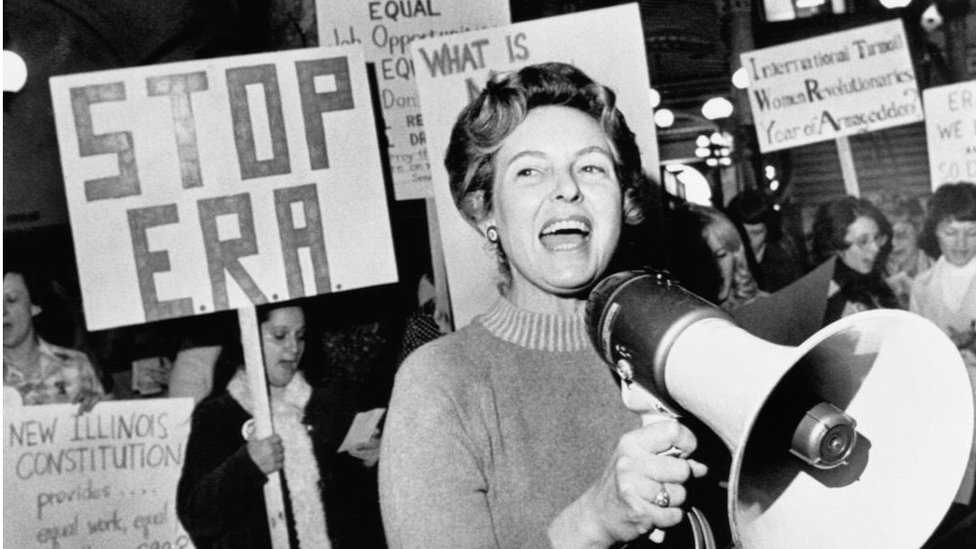
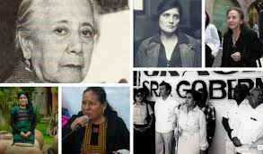
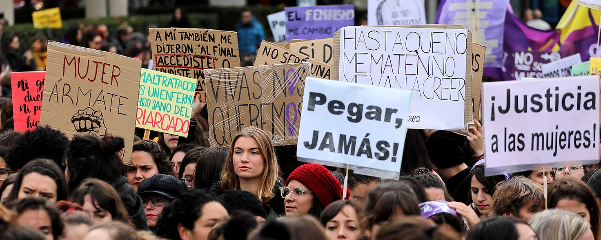
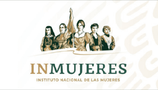
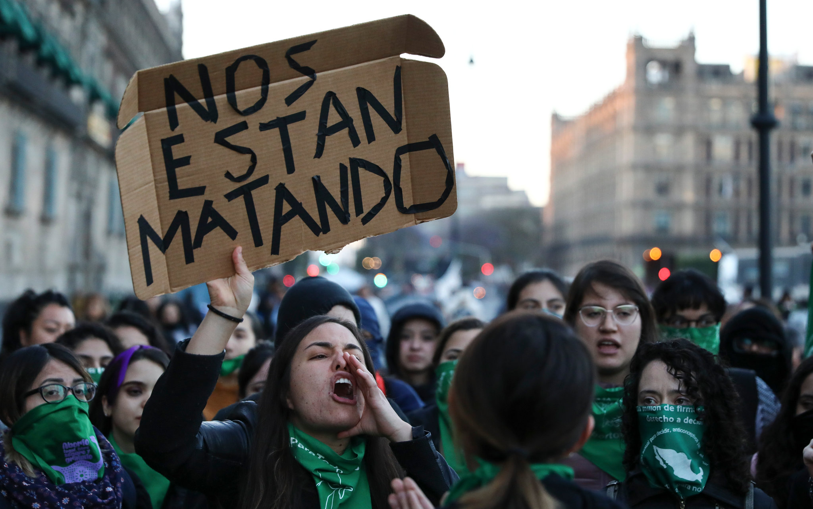
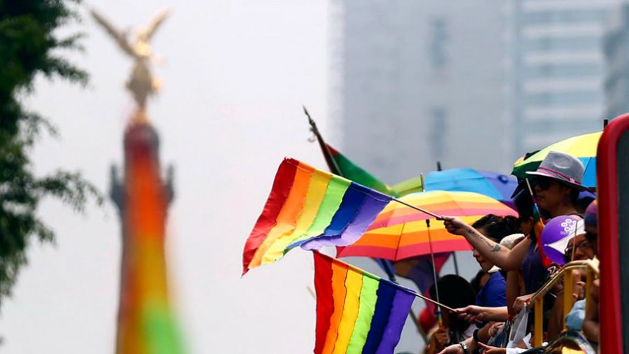
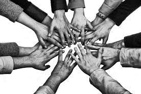

Esta es una pagina web dirigida a las bases de la materia de Orientacion Juvenil y Profesional II en la que se expondran temas relacionados con dicha materia y como hoy en dia tienen un impacto en la sociedad y como esta los enfrentan.
Intituto Politecnico Nacional
Centro De Estudios Cientificos y Tecnologicos No.3
Estanislao Ramirez Ruiz
Materia:Orientacion Juvenil y Profesional II
Alumno:Rodrigo Cedric Morales Correa
Profesor:Jose Luis Vazquez Piñon
Grupo:2IM6
La equidad de genero hace referencia a la dignidad y los derechos que poseen todas las personas. Este termino refiere al derecho que poseen hombres y mujeres de recibir un trato justo, mas alla del genero y a la lucha por garantizar el acceso de todos a oportunidades en el ambito social, economico, politico y domestico.

La gran diferencia entre generos en relacion a la toma de decisiones o el poder causa debilidad social y politica. Actualmente, se busca implementar en la sociedad una mayor equidad de genero hacia las mujeres ya que es el genero mas discriminado.

El movimiento que reivindica los derechos de las mujeres surgio a partir de lo 70s cuando comenzaron a reclamar una equidad de genero que balanceara el acceso de las mujeres a la salud, educacion y participacion politica al que en ese entonces solo tenian los hombres.
En 1995 se realizo en Beijing la Conferencia Mundial sobre la Mujer, en la que varias agencias internacionales e instituciones gubernamentales y no gubernamentales fomentaron el uso de estrategias para concientizar a la sociedad acerca de las desigualdades de genero, reguladas a nivel local e internacional.

La equidad de genero es un derecho del ser humano. Todas las personas poseen derechos y deberes por el solo hecho de ser persona. Garantizar los derechos de las personas de todos los generos es indispensable para la construccion de sociedades justas y equitativas.
Busca que todas las personas puedan tener la oportunidad de acceder a los diferentes espacios, bienes y servicios que soliciten.
Las mujeres no siempre gozan de los mismos derechos que los hombres debido a diferencias estructurales y a la distribucion desigual de poder.
Los hombres y las mujeres deben tener igual participacion en la toma de decisiones, en el acceso a la educacion y a una vida profesional. Para reducir las diferencias del sistema politico, social y economico, cada uno debe poder expresar sus ideas, prioridades y opiniones.
Para lograr un equilibrio y un correcto desarrollo en la sociedad, es elemental que se respete la contribucion de todas las personas de cualquier genero, cumpliendo el rol de ciudadanas y ciudadanos y individuos sociales.



En Mexico la equidad de genero en los ambitos sociales, politicos y economicos es una deuda pendiente. Sin embargo, en las ultimas decadas ha habido una serie de reformas y avances en pos de los derechos de las mujeres mexicanas.

A nivel nacional, la tasa de violencia familiar alcanzo 547 casos por cada 100,000 habitantes en 2020, mucho mayor a la tasa de 334 casos en 2015. De forma parecida, entre 2015 y 2020, asaltos sexuales crecieron de 111 casos por cada 100,000 habitantes a 177.

La violencia y sus diversas manifestaciones destruyen la confianza de una comunidad, impactan negativamente en el bienestar de las personas y permiten el surgimiento de nuevas violencias, unas mas sonadas que otras, y muchas veces invisibles.
La violencia y el abuso no solo afectan a las mujeres involucradas, sino tambien a sus hijos, familiares y comunidades. Estos efectos incluyen daño a la salud de la persona, posibles daños a largo plazo en los niños y daños a las comunidades como la perdida de trabajo y la falta de hogar.
La violencia de gnero afecta gravemente a mujeres y personas LGBTI+. Se produce cuando sufren algun tipo de discriminacion, agresion, hostigamiento o degradacion por su identidad de genero, expresion de genero u orientacion sexual.
La violencia les arrebata su dignidad, sus derechos, su potencial, su futuro e incluso la vida.


Con toda la informacion recabada puedo argumentar que la equidad de genero es un conjunto de reglas que permiten la igualdad de participacion de hombres y mujeres en su medio organizacional y social con un valor superior a las establecidas tradicionalmente, evitando con ello la implantacion de estereotipos o discriminacion.
Ahora bien relacionando este tema con la materia Orientacion Juvenil y Profesional II y derivando de tema del proceso de decisiones que es una tema central de la materia puedo decir que las mujeres son a menudo lideres dinamicas promotoras del cambio que impulsan a las mujeres y a los hombres a participar, reivindicar sus derechos, fortalecer las comunidades y proteger el planeta. Su participacion es fundamental para un gobierno democratico.Y esto se ha reflejado como es que cada vez mas son las mujeres ocupan cargos politicos altos y debido ha esto tambien se han observado cambios que benefician para convertir al pais en un pais con indices altos en inclusion de genero y un ambiente sin violencia.
A lo largo de la historia podemos ver como es que la el genero femenino se ha tenido que enfrentar con problemas de desigualdad y violencia de genero, en decadas pasadas de daba mas la desigualdad de genero y como los roles estaban muy marcados que fueron desapareciendo con los años y esto derivado a que las mujeres han tenido que luchar por sus derechos y hacer incontables huelgas y manifestaciones podemos decir que actualmente ha cambiado ese aspecto ya que es notable ese cambio con la participacion activa y equitativa de las mujeres en todos los aspectos (economicos, sociales, culturales y politicos).Sin embargo no hay que generalizar, ya que en muchas regiones rurales del pais al ser comunidades alejadas de la poblacion urbana, en esas comunidades tienden a tener un nivel de vida mas conservador y con inequidad de genero marcada.
El caso que plantee fue un de los miles de caos que suceden en Mexico aunque si bien la equidad de genero se ha neutralizado para ambos generos, el pais enfrenta el tema de violencia contra el genero femenino y que como cotidianamente la sociedad tiene que escuchar en las noticias eventos de violencia contra la mujer muy desgarradores y que mas de uno ha marcado el pais.El caso que presente anteriormente cuando lo lei pude analizar que este tipo de eventos afectan a todo tu entorno y que hay tantos casos de feminicidio que no se resolvieron y quedaron impune ante ley y las personas que cometen el delito de quitarle la vida a las mujeres a veces solo por enojo, deberian de aplicar medidas mas graves como la silla electrica otro tema de controversia, sin embargo considero que para este tipo de delito se aplique ya que la persona que le quitaron la vida no volvera y la otra solo se le privara de su vida social unos años y quedara libre.